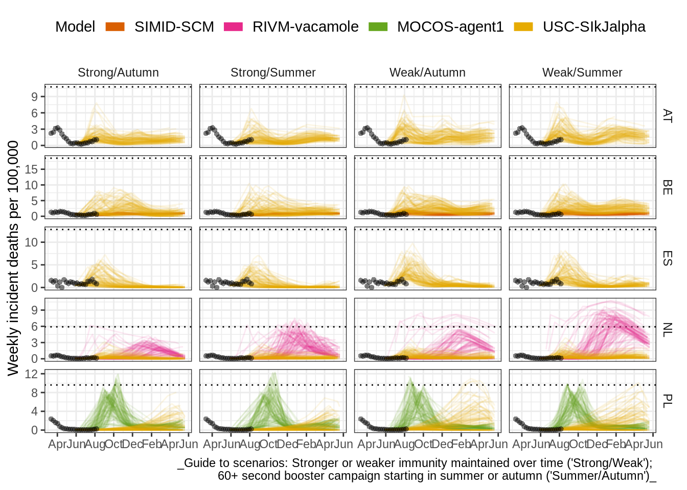
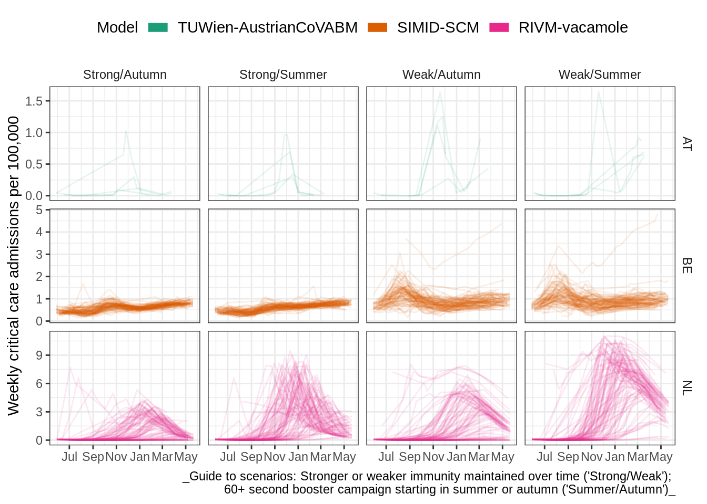

Round 1
Report created 2022-08-12
Scenarios
Scenario description
We asked teams of researchers across Europe to use quantitative models to project COVID-19 outcomes for 32 European countries over the next year. In order to explore different sets of assumptions about drivers of the pandemic, we asked teams to vary four sets of parameters. We can describe this in a 2x2 scenario specification:
Slow summer booster campaign
|
Fast autumn booster campaign
|
|
Optimistic slow immune waning
|
Scenario A (‘Strong/Summer’) | Scenario B (‘Strong/Autumn’) |
Pessimistic fast immune waning
|
Scenario C (‘Weak/Summer’) | Scenario D (‘Weak/Summer’) |
* If a second booster is already offered to 60+ (Greece, Netherlands), vaccination uptake continues as currently
** If a second booster is already offered to 60+ (Greece, Netherlands), a third booster dose is recommended
See also the full scenario details for more detail on the common set of assumptions teams used to create their models.
In Round 1, we asked modellers to start their projections from the 2022-05-22. Data after this date were not included, and as a result, model projections are unlikely to fully account for later information on the changing variants or behavioural patterns.
In this report we only show results from countries with multiple models.
Current situation
We consider vaccination rates in countries for which multiple teams of modellers contributed projections.
We note that the following countries are already implementing a second booster dose among the 60+ age group:
- Netherlands
- Greece
Participating teams
6 models contributed scenario projections to Round 1. No country had results from more than two models. Given this low coverage, we did not produce an ensemble model.
Models
| Team | Countries | Weeks |
|---|---|---|
| USC-SIkJalpha | 32 | 52 |
| MOCOS-agent1 | 1 | 52 |
| RIVM-vacamole | 1 | 52 |
| SIMID-SCM | 1 | 52 |
| UC3M-EpiGraph | 1 | 52 |
| TUWien-AustrianCoVABM | 1 | 44 |
Countries
| Code | Country | Infection | Case | Hosp | Icu | Death |
|---|---|---|---|---|---|---|
| AT | Austria | 1 | 2 | 1 | 1 | 1 |
| BE | Belgium | 1 | 1 | 1 | 1 | 2 |
| ES | Spain | 1 | 1 | 1 | 0 | 1 |
| NL | Netherlands | 1 | 2 | 1 | 1 | 2 |
| PL | Poland | 1 | 2 | 1 | 0 | 2 |
Cumulative outcomes
For each model and scenario, we compare the total number of outcomes over the entire projection period as a % of the total country population. We compared the cumulative number of projected outcomes to the cumulative total over one year before projections started (May 2021 - May 2022).
Observations
Across all scenarios, we observed very low or no probability of deaths over the next year matching the previous year’s total. This was not true of other outcomes with comparative observed data (cases, hospitalisations).
Comparing scenarios by immune assumptions, we observed higher total counts of projected outcomes when immunity was modelled as weaker (a faster decline to a reduced plateau of immunity). In these scenarios, in many countries the number of cases projected over the next year approached or exceeded the total observed over the last year.
However, recent data indicate the optimistic scenario of immune waning may be more likely than the pessimistic scenario. Between scenarios with strong immunity (-60% over 8 months), we observed relatively little difference in cumulative outcomes between scenarios providing a summer or an autumn booster campaign.
Projections
Death
Guide to scenarios: Stronger or weaker immunity maintained over time (‘Strong/Weak’); 60+ second booster campaign starting in summer or autumn (‘Summer/Autumn’)
Case
Guide to scenarios: Stronger or weaker immunity maintained over time (‘Strong/Weak’); 60+ second booster campaign starting in summer or autumn (‘Summer/Autumn’)
Infection
Guide to scenarios: Stronger or weaker immunity maintained over time (‘Strong/Weak’); 60+ second booster campaign starting in summer or autumn (‘Summer/Autumn’)
Hosp
Guide to scenarios: Stronger or weaker immunity maintained over time (‘Strong/Weak’); 60+ second booster campaign starting in summer or autumn (‘Summer/Autumn’)
Icu
Guide to scenarios: Stronger or weaker immunity maintained over time (‘Strong/Weak’); 60+ second booster campaign starting in summer or autumn (‘Summer/Autumn’)
Incident outcomes
We explored the incidence of COVID-19 per 100,000 over the projection period and in terms of projected peaks in incidence. We summarised peaks both over the entire projection period, and over only the autumn-winter period (November through March); we considered (A) the timing and maximum weekly incidence of each peak, and (B) the total number of peaks.
Observations
Across scenarios for hospitalisations, we noted that peak sizes rarely approached the highest level previously observed (dotted line).
We saw no systematic difference in the number of peaks between scenarios modelling a booster campaign in summer versus autumn, but as before, differences were more clearly between a longer or shorter duration of waning immunity.
Comparing projections for deaths, we noticed that projected peaks shift to slightly later in the year with a vaccination campaign in the summer compared to autumn, moving the likely timing of a peak from late summer/autumn into winter.
Projections
Over time
Death

Case
Infection

Hosp
Icu

Peaks
Autumn-winter
Projections over November 2022 through March 2023
Death
A. Size and timing of peaks. Boxplots show summary of the likely value at peak incidence (median and interquartile range); points show timing and size of peaks from independent sample simulations
B. Projected number of peaks (median with 5-95% probability)
Guide to scenarios: Stronger or weaker immunity maintained over time (‘Strong/Weak’); 60+ second booster campaign starting in summer or autumn (‘Summer/Autumn’)
Case
A. Size and timing of peaks. Boxplots show summary of the likely value at peak incidence (median and interquartile range); points show timing and size of peaks from independent sample simulations
B. Projected number of peaks (median with 5-95% probability)
Guide to scenarios: Stronger or weaker immunity maintained over time (‘Strong/Weak’); 60+ second booster campaign starting in summer or autumn (‘Summer/Autumn’)
Infection
A. Size and timing of peaks. Boxplots show summary of the likely value at peak incidence (median and interquartile range); points show timing and size of peaks from independent sample simulations 
B. Projected number of peaks (median with 5-95% probability)
Guide to scenarios: Stronger or weaker immunity maintained over time (‘Strong/Weak’); 60+ second booster campaign starting in summer or autumn (‘Summer/Autumn’)
Hosp
A. Size and timing of peaks. Boxplots show summary of the likely value at peak incidence (median and interquartile range); points show timing and size of peaks from independent sample simulations
B. Projected number of peaks (median with 5-95% probability)
Guide to scenarios: Stronger or weaker immunity maintained over time (‘Strong/Weak’); 60+ second booster campaign starting in summer or autumn (‘Summer/Autumn’)
Icu
A. Size and timing of peaks. Boxplots show summary of the likely value at peak incidence (median and interquartile range); points show timing and size of peaks from independent sample simulations
B. Projected number of peaks (median with 5-95% probability)
Guide to scenarios: Stronger or weaker immunity maintained over time (‘Strong/Weak’); 60+ second booster campaign starting in summer or autumn (‘Summer/Autumn’)
Entire projection period
Projections over June 2022 through June 2023
Death
A. Size and timing of peaks. Boxplots show summary of the likely value at peak incidence (median and interquartile range); points show timing and size of peaks from independent sample simulations
B. Projected number of peaks (median with 5-95% probability)
Guide to scenarios: Stronger or weaker immunity maintained over time (‘Strong/Weak’); 60+ second booster campaign starting in summer or autumn (‘Summer/Autumn’)
Case
A. Size and timing of peaks. Boxplots show summary of the likely value at peak incidence (median and interquartile range); points show timing and size of peaks from independent sample simulations
B. Projected number of peaks (median with 5-95% probability)
Guide to scenarios: Stronger or weaker immunity maintained over time (‘Strong/Weak’); 60+ second booster campaign starting in summer or autumn (‘Summer/Autumn’)
Infection
A. Size and timing of peaks. Boxplots show summary of the likely value at peak incidence (median and interquartile range); points show timing and size of peaks from independent sample simulations
B. Projected number of peaks (median with 5-95% probability)
Guide to scenarios: Stronger or weaker immunity maintained over time (‘Strong/Weak’); 60+ second booster campaign starting in summer or autumn (‘Summer/Autumn’)
Hosp
A. Size and timing of peaks. Boxplots show summary of the likely value at peak incidence (median and interquartile range); points show timing and size of peaks from independent sample simulations
B. Projected number of peaks (median with 5-95% probability)
Guide to scenarios: Stronger or weaker immunity maintained over time (‘Strong/Weak’); 60+ second booster campaign starting in summer or autumn (‘Summer/Autumn’)
Icu
A. Size and timing of peaks. Boxplots show summary of the likely value at peak incidence (median and interquartile range); points show timing and size of peaks from independent sample simulations
B. Projected number of peaks (median with 5-95% probability)
Guide to scenarios: Stronger or weaker immunity maintained over time (‘Strong/Weak’); 60+ second booster campaign starting in summer or autumn (‘Summer/Autumn’)